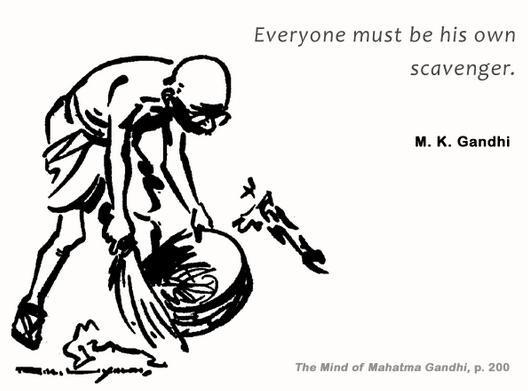

Gandhi Ji's and His Role on Sanitation
Mahatma Gandhi was a great champion of cleanliness. He was very much concerned about the dirty roads, streets, temples and specially, harizan bastis of the country. Just after returning from South Africa he noticed very bad state of affairs in India regarding sanitation and cleanliness. He took upon himself to motivate and personally commit towards making the country filth free.
As early as 4th February 1916, while addressing a gathering at the inauguration function of Banaras Hindu University, Gandhi ji spoke about the importance of cleanliness and expressed his pain and anguish about the dirt and filth all around. He gave example of his visit to Vishwanath Temple and spoke about the dirty state of affairs in and around the temple. He said: “Is not this great temple a reflection of our own character?” Sharing his pain he questioned whether the temple would be dirt and filth free after the British had left the country. Thus for him cleanliness was equally important as the freedom of the nation.
Gandhi ji was always of the view that everyone should first be the change he/she wishes to see in the world. Thus, whenever and wherever Gandhi ji would get the opportunity he himself would start cleaning the places. Also, as part of constructive programmes and visits all over the country, apart from preparing people for mass struggle against the British, he also lectured them about the importance of cleanliness and proper sanitation.
In D.G. Tendulkar’s “Mahatma” Volume Three, there is a reference to Gandhi leaving Patna in 1934, as part of his Harijan tour, for Orissa. At Champapurhat, he found that there was a dispensary on the grounds of the Gandhi Seva Ashram, and used that occasion to give a lecture on the need to rely not on medicines for a cure, but to prevent disease.
Gandhi ji always emphasise the need to educate villagers on good hygiene and sanitation. According to him, the true function of the Ashram was to educate people how they could avoid disease. Gandhi ji and his volunteers would conduct a mass contact programme with the villagers; they would talk about the necessity of sanitation, about keeping their places clean, and about personal hygiene.
When the villagers near Gandhi’s ashram refused to cover excreta with earth believing it to be a bhangi’s work and sinful, Gandhi personally supervised the scavenging work in villages. To set an example, he, himself used to go to the villages with a bucket and a broom and would clean the places.
All scavenging work in Gandhi ji’s ashram was done by its inmates. No dirt or filth could be found anywhere on the ashram ground. There were pits in which all rubbish was buried. In a separate manure pit, peelings of vegetables and left-over food were dumped. Waste water was used for gardening purposes.
Gandhi ji regularly wrote about the importance of hygiene in his newspaper Harijan. Thus, the Father of our Nation fought not only against the bondages of the British rule but also against the bad practices our people regarding sanitation and hygiene. All his life he inspired and motivated people to maintain personal as well as public hygiene.
Therefore, it is a great gesture and an apt tribute to the Mahatma that the Government has launched the “Swachh Bharat Compaign” on his birth day i. e. on 2nd of October.
